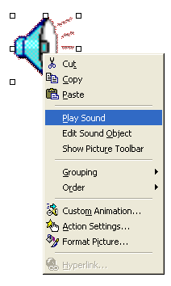
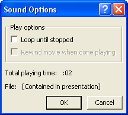

Free
powerpoint
Tutorials
|
Free
powerpoint
Tutorials
|
|
 home home |
Stay at Home and Learn | ||||
Adding Sounds to your PowerPoint Presentations |
|||||
|
Part 1, 2
If all you want is a sound, then click Insert > Movies and Sounds again from the PowerPoint menu bar at the top. Choose a sound option and Browse to the location where the sound is. When you insert a sound, PowerPoint gives you a speaker symbol on your slide: The speaker is selected by default. Right click the icon to see a context menu:  Click on Play Sound to hear your chosen sound straight away. Click on Edit Sound Object to see the following dialogue box:  As you can see, there's not too many options here! But check the box if you want your sound to loop. You can include sounds anywhere on your slides. Look at the right click
menu again, and you'll see the Action Settings button. There's not too
many settings for a sound, but you can elect to have the sound play
when the mouse is over the speaker symbol.
And that's it for this PowerPoint course! If you have worked your way through it from beginning to end, then you should now have some pretty impressive PowerPoint skills. Putting together a presentation is a creative process, so don't be afraid to experiment. Ask yourself not only whether you like it, but whether your audience will enjoy it too. After all, the presentation is for their benefit, not yours! One final thing. People who give good presentations tend to be very experienced with the software, and know what it can and can't do. Practice as much as you possible can and you too will be one these people.
As a conclusion to this PowerPoint course, we've put together some tips for creating and delivering your Presentation.
|
||||